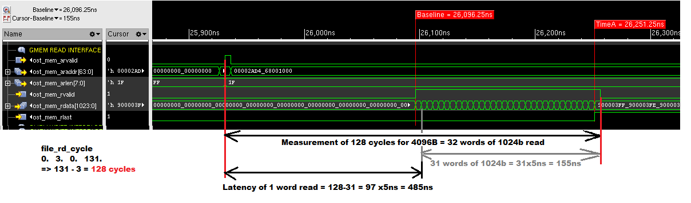
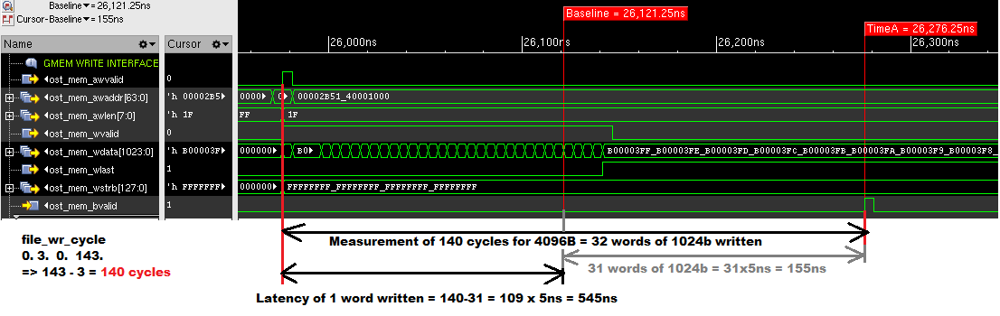

hdl_single_engine
A very simple Verilog written example to interface with AXI-lite slave and AXI-master and measure the bandwidth and latency.
Code location:
Code can be found at: https://github.com/OpenCAPI/oc-accel/blob/master/actions/hdl_single_engine/
Latency Evaluation
Single Engine test offers a simple way to evaluate latency.
Simulation can be used to better understand the evaluation mechanism, as OCSE can emulate the server behavior.
The FPGA generates a sequence of 128Bytes words read or write operations from/into the server memory.
The routine launches a counter whose initial and end values can be read afterwards in dedicated registers.
Each counter increment represents 5ns.
A file is automatically written by the test sotfware to store the initial and end values.
The difference represents a complete multiple words operation, so a short calculation is required to obtain the minimum time required to read/write 1 single word.
Here are examples of commands and associated simulations to evaluate latency on a OC-AD9H3 card in an IBM IC922 server and associated simulations:
Read of 4096B at default memory location provided by the server:
Make sure make apps has been run from your oc-accel directory
cd oc-accel/action/hdl_single_engine/sw
./hdl_single_engine -c 100 -w 0x00000601 -n1 -N0 -p 0x00001F07 -t 100000 -C5
cat file_rd_cycle
arid, rd_cmd, rid, rd_resp
0, 3, 0, 131
131-3 * 5 ns = 640ns for the total 32 words read time.
We then substract 31 * 5 ns = 155ns to obtain 485ns read time for the first word.
Minimum latency in this configuration is thus 640ns for 4kB read and 485ns for the first 128B word read.
Associated read simulation chronogram:

Write of 4096B to default memory location provided by the server:
Make sure make apps has been run from your oc-accel directory
cd oc-accel/action/hdl_single_engine/sw
./hdl_single_engine -c 100 -w 0x00000601 -n 0 -N1 -p 0x00001F07 -t 100000 -C5
cat file_wr_cycle
-- Counter values for different signals --
awid, wr_cmd, bid, wr_resp
0, 3, 0, 143
140 * 5 ns = 700ns for the total 32 words write time.
We then substract 31 * 5 ns = 155ns to obtain 545ns read time for the first word.
Minimum latency in this configuration is thus 700ns for 4kB written and 545ns for the first 128B word written.
Associated read simulation chronogram:

Bandwidth Evaluation
Using following test commands allow to get a summary of R/W measured bandwidth:
Make sure make apps has been run from your oc-accel directory
cd oc-accel/action/hdl_single_engine/sw
./hdl_single_engine -c 50 -w 0x00000601 -n100000 -N0 -p 0x00001F07 -t 10000 -C5 -v
Read average bandwidth (Host->FPGA): 409600000 bytes in 20172 usec ( 20306.844 MB/s )
Read bandwidth min, max and variance: 409600000 bytes in 20172 usec ( 20303.361 MB/s, 20313.430 MB/s, 3.131 )
Above we can check the read only bandwidth is around 20GB/sec with a OC-AD9H3 installed in a IBM IC922 server.
./hdl_single_engine/sw/hdl_single_engine -c 50 -w 0x00000601 -N10000 -n0 -p 0x00001F07 -t 10000 -C5 -vv
Write average bandwidth (FPGA->Host): 40960000 bytes in 1894 usec ( 21611.797 MB/s )
Write bandwidth min, max and variance: 40960000 bytes in 1894 usec ( 20940.695 MB/s, 21671.958 MB/s, 9266.666 )
Above we can check the write only bandwidth is around 21GB/sec with a OC-AD9H3 installed in a IBM IC922 server.
./hdl_single_engine -c 50 -w 0x00000601 -n100000 -N100000 -p 0x00001F07 -t 10000 -C5 -v
Duplex average bandwidth: 409600000 bytes in 22281 usec ( 18415.290 MB/s )
Duplex bandwidth min, max and variance: 409600000 bytes in 22281 usec ( 18383.376 MB/s, 18710.886 MB/s, 2986.513 )
Above we can check the duplex read and write bandwidth is around 18GB/sec with a OC-AD9H3 installed in a IBM IC922 server.
Command arguments details :
-c 100: perform 100 tests. eg to initiate the path and get an average latency-w 0x00000601: setp the configuration to read 4096-n1: n read operations requested (1 here)-N0: N write operations requested (0 here)-p 0x00001F07: p stands for "pattern", can be anything.-t 100000: t stands for "time out" in seconds-C5: C stands for "Card", here we choose the card number 5 in the server
Conclusion
Once again, we can easily use simulation to evaluate future performance of CAPI/OPENCAPI hardware, and a simple example provided allow any user to double check the results.
Such latency and bandwidth results obtained without software driver are unique at the time of writing.